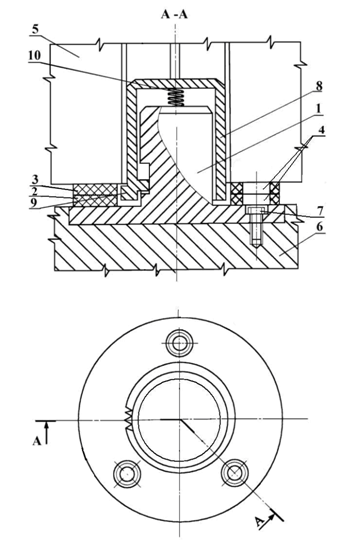

Авторами [87; 88] поставленная проблема решена путем разработки конструкции универсального двухслойного компенсатора для штампов с креплением верхней плиты за хвостовик. Основой компенсатора (рис. 1.27) служит составной элемент, выполненный в виде двух упругих пластин, например, из полиуретана, с отверстиями. Одна из пластин имеет возможность перемещаться поворотом относительно другой, что позволяет менять площадь перекрытия отверстий упругих элементов, а, соответственно, и опорной поверхности, что приводит к изменению жесткости компенсатора, расширяя диапазон технологических нагрузок, для которых он определен.

1 – хвостовик;
2 и 3 – нижняя и верхняя упругие пластины;
4 – отверстия в упругих пластинах;
5 – ползун пресса;
6 – верхняя плита штампа;
7 – винтовое соединение хвостовика и верхней плиты штампа;
8 – колпак;
9 – зуб колпака для фиксации повернутой упругой пластины;
10 – пружина
Рисунок 1.12 – Двухслойный компенсатор [87; 88]
При необходимости изменить жесткость компенсатора, верхнюю пластину поднимают для съёма с фиксирующего зуба, поворачивают на необходимый угол и опять опускают, фиксируя своё положение на зубе (см. рис. 1.12).
Лабораторные и промышленные испытания вышеописанных конструкций компенсаторов на основе полиуретановых пластин подтвердили их высокую эффективность. Авторы [84; 87; 88] утверждают, что при реализации индивидуального подхода к каждой технологической операции стойкость штампов повышается более чем на 25 %.
Таким образом, использование универсального поворотного компенсатора позволяет существенно расширить диапазон технологических нагрузок за счет варьирование жесткостью компенсатора при изменении площади перекрытия отверстий различной формы в упругих платинах.
Однако для проектирования конструкций универсальных поворотных компенсаторов необходима разработка методик расчета площади перекрытия отверстий различной формы (например, круглой, овальной, многоугольной) в упругих пластинах компенсирующего устройства.